Analytical Trail 1 - Religion and Happiness
The following pictures and captions aim to give an insight to how religion and happiness correlate and has changed over time. In our modern day society, many claim religion to be a source of happiness and solace. By analyzing these statistics we can see how religion and happiness correlate and change over time.
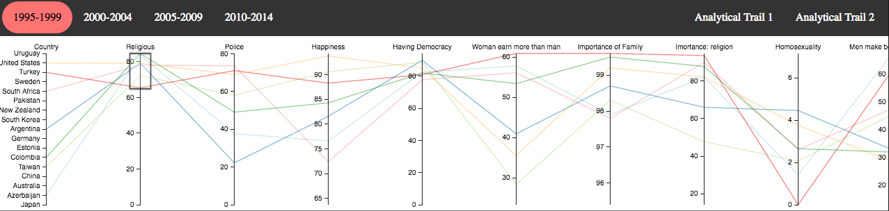
Immediately we can brush and highlight the top seven countries that have a high religious population. If we look over to happiness we can also see that it varies quiet a bit. To limit our optinos we can highlight the top three happiness levels.
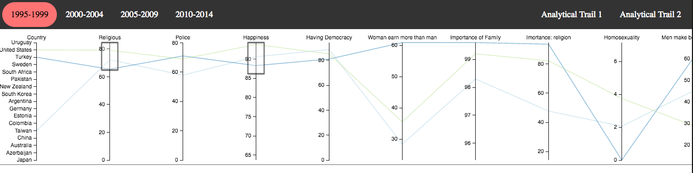
United States, Taiwan and Turkey. We'll use United States as our sample country.
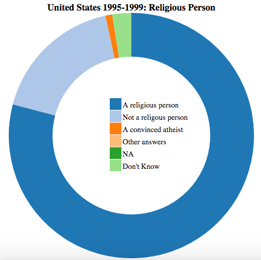
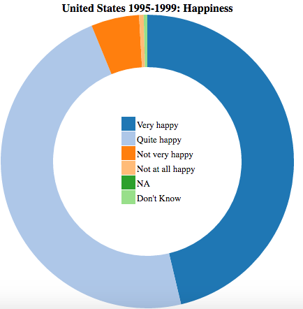
This shows a detailed view into what the American population think. As we move forward in time we will see a clear picture of what it might mean.
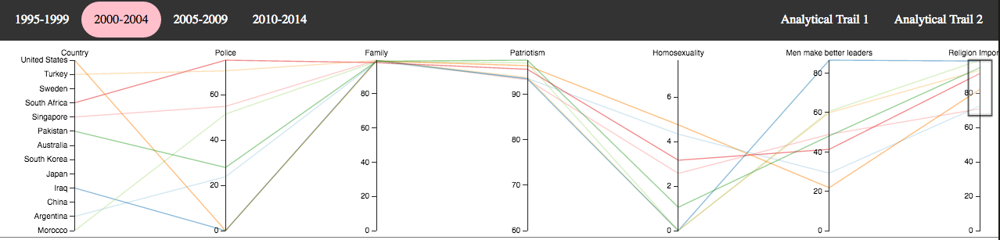
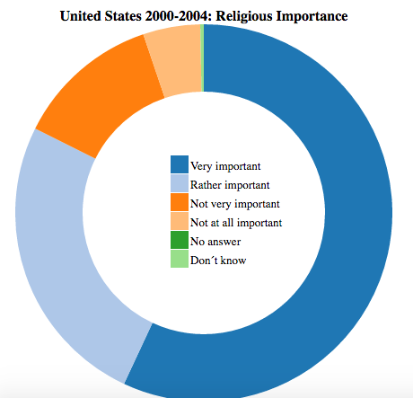
Looking at 2000-2004, the questions asked were not entirely the same and frankly lacking. However, what's clear is that religious importance versus being a religious person is not the same. We can also see that countries that lay importance to religion these years are not the same as in the previous years.
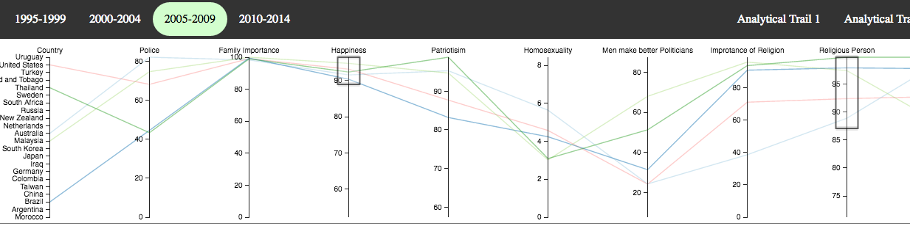
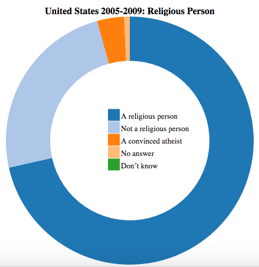
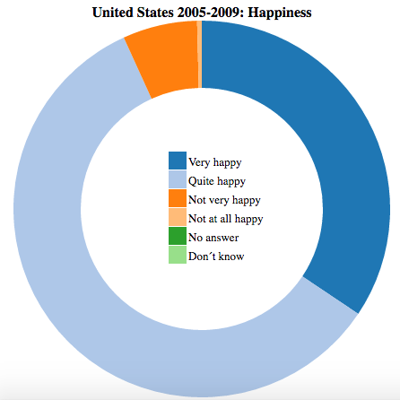
In 2005, Religion amongst people has dropped and as we know with world wide trends, relgion is on the decline in western civilizations. What is also interesting is that happiness has changed compared to back in the 1990s.
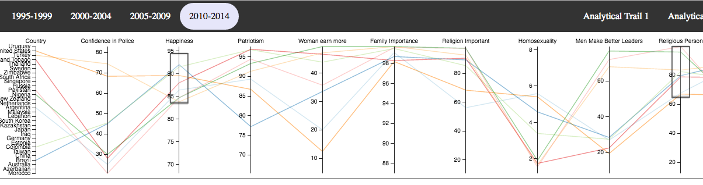
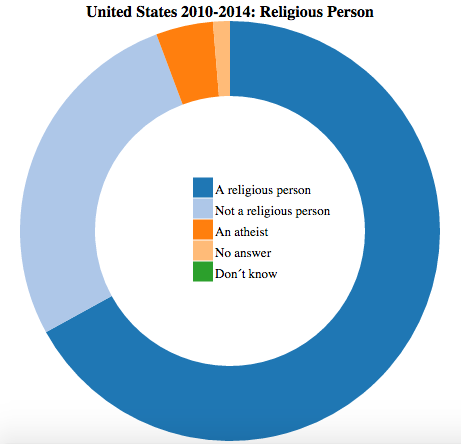
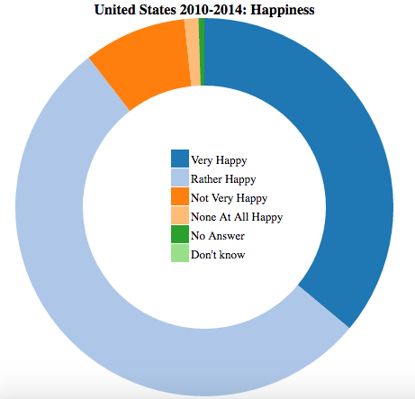
Finally in 2010, the state of atheism has increased and happiness has decreased. However, while these two things do correlate statistically they may not imply causation. By observing other statistics such as Patriotism, you see a clear drop too. This could be due to things such as the economic crash in 2009, the effect terrorism has had on the US or perhaps the clear increase in unemployment and national debt within the US during the Bush era.